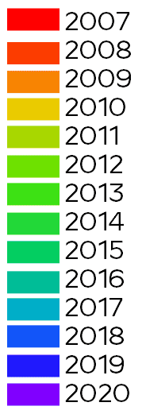

<!DOCTYPE html>
<html>
<head>
  <title>Maa-amet custom render</title>
  <meta charset="utf-8" />
  <meta name="viewport" content="width=device-width, initial-scale=1.0">
    <meta name="content_origin" content="2020-08-07"/>
    <meta name="minor_updates" content="2021-01-06"/>
    <meta property="og:image" content="../favico.png" />
    <link rel="icon" href="../favico.png" type="image/x-icon"/>
    <link rel="shortcut icon" href="../favico.png" type="image/x-icon"/>
  <link rel="stylesheet" href="https://unpkg.com/leaflet@1.5.1/dist/leaflet.css"
   integrity="sha512-xwE/Az9zrjBIphAcBb3F6JVqxf46+CDLwfLMHloNu6KEQCAWi6HcDUbeOfBIptF7tcCzusKFjFw2yuvEpDL9wQ=="
   crossorigin=""/>
  <script src="https://unpkg.com/leaflet@1.5.1/dist/leaflet.js"
   integrity="sha512-GffPMF3RvMeYyc1LWMHtK8EbPv0iNZ8/oTtHPx9/cc2ILxQ+u905qIwdpULaqDkyBKgOaB57QTMg7ztg8Jm2Og=="
   crossorigin=""></script>
  <style type="text/css">
    body {
       margin: 0;
       padding: 0;
    }
    html, body, #map{
       width: 100%;
       height: 100%;
    }
  </style>
</head>
<body>
  <div id="map"></div>
  <script>
    var basemaps = {};
    var optional = {};
    var map = L.map('map').setView([58.754, 24.966], 8.0);
    basemaps.kaart = L.tileLayer('https://tiles.maaamet.ee/tm/tms/1.0.0/kaart@GMC/{z}/{x}/{y}.jpg', {
      minZoom: 1,
      maxZoom: 17,
      tms: true,
      updateWhenIdle: false,
      attribution: "Aluskaart: <a href='https://www.maaamet.ee/'>Maa-amet</a>",
    });
    basemaps.kaart.addTo(map);
    basemaps.OSM = L.tileLayer('https://tile.openstreetmap.org/{z}/{x}/{y}.png', {
      minZoom: 1,
      maxZoom: 17,
      tms: false,
       attribution: '&copy; <a href="https://www.openstreetmap.org/copyright">OpenStreetMap</a> contributors',
      updateWhenIdle: false,
      attribution: "Aluskaart: <a href='https://www.maaamet.ee/'>Maa-amet</a>",
    });
    basemaps.OSM.addTo(map);
    basemaps.ortofoto = L.tileLayer('https://tiles.maaamet.ee/tm/tms/1.0.0/foto@GMC/{z}/{x}/{y}.jpg', {
      minZoom: 1,
      maxZoom: 17,
      tms: true,
      updateWhenIdle: false,
      attribution: "Aluskaart: <a href='https://www.maaamet.ee/'>Maa-amet</a>",
    });
    basemaps.ortofoto.addTo(map);

    optional.tumendamine = L.tileLayer('must256_50.png', {
      minZoom: 1,
      maxZoom: 17,
      tms: true,
      updateWhenIdle: false,
    });
    optional.tumendamine.addTo(map);
    optional.veel_tumedam = L.tileLayer('must256_50.png', {
      minZoom: 1,
      maxZoom: 17,
      tms: true,
      updateWhenIdle: false,
    });
    optional.veel_tumedam.addLayer;
    optional.geomeetria_vanus = L.tileLayer('TMS/{z}/{x}/{y}.png', {
      minZoom: 1,
      maxZoom: 17,
      tms: false,
      updateWhenIdle: false,
      attribution: 'Rendered from Maa-amet ETAK'
    });
    optional.geomeetria_vanus.addTo(map);


    // LEGEND
    var legend = L.control({
      position: 'bottomright'
    });

    legend.onAdd = function(map) {
      var div = L.DomUtil.create('div', 'info legend');

      div.innerHTML +=
        '';
      return div;
    };

    legend.addTo(map);


    L.control.layers(basemaps, optional).addTo(map);
  </script>
</body>
</html>
